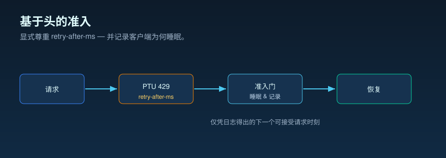

运维随笔 · PTU 恢复与 429 处理
429 是一种恢复信号，而不只是一个错误
流量突发将 PTU 服务推到 100% 利用率，调用开始以 429 返回。本能反应是从三种做法中
选一个——开一个健康检查轮询循环直到有容量空出来；按固定间隔盲目重试；或是立刻
把请求转投到别的目标。这三种做法都暗含同一个假设：客户端必须自己判断何时重试才
安全。其实不然——429 已经把那个答案放进了
retry-after-ms 头里。因此，运维上真正的问题不是"调用失败了没有"，而是
"谁来主导下一个决策——等待、重定向，还是放弃"。
retry-after-ms 响应头就是准入约定：遵守它、加入抖动，并为观测到的长尾
做好准备。这张单页概览传达的就是这一条信息，并标注了证据边界——响应头是 Microsoft Learn
的规范，而与它并排的"中位数短、长尾长"形态，则是本仓库源运行里经脱敏的公开
聚合，仅供描述参考。
打开 429 恢复的单页概览 SVG。

为什么要读头，而不是靠猜
上述三种做法都暗含同一个假设——客户端无从知道容量何时空出来，所以只好去探询、
按固定间隔等待，或者干脆离开。在接受这个假设之前，不妨先把两件事对比一下。第一
件是 Microsoft Learn 记录的：在 100% 利用率下，服务会立刻返回 429，并附上
retry-after-ms——服务给出的重试等待时间。第二件是本仓库跨多次
源运行实际观测到的 retry-after-ms 值、经脱敏的公开聚合，用来描述这些建
议等待时间的实际面貌。两者结合起来，"何时重试才安全"就从客户端的猜测，变成
了服务直接告知你的值。
值得特别关注的，是这份聚合的分布形态。建议等待时间的中位数很短——整体 p50 ≈ 43 ms。
因此，健康检查循环或盲目设置的固定退避间隔，等待时间通常远超服务实际要求。但长尾
不容忽视：极少数等待延伸至 17,000 ms 附近（整体 p99 ≈ 16,921 ms）。
这种"中位数短、长尾长"的形态，正是运维上的关键事实——响应头应当被视为准入控制信号，
而不是固定的重置计时器。即时返回 429 及 retry-after-ms 规范约定已由 Microsoft
Learn 记录在案；"用统一的延迟预算上限来决定何时停止等待、转而重定向"，则是本仓库
愿意为之背书的运维推断。下方的原始图表将这一分布直观呈现。
问题
当 PTU 容量返回"现在不行"时，客户端该如何决定下一步？
证据
Microsoft Learn 的预置吞吐量与溢出文档，以及本仓库 PTU 准入控制器的运维笔记。
决策
把重试的归属收敛到唯一一处：尊重头、加抖动，只在延迟策略要求时才重定向。
官方规范 · 服务告诉你的内容
头就是准入信号
Microsoft Learn 将 PTU 的高负载处理描述为：立刻返回 429 并附带
retry-after-ms 与 retry-after 响应头。同一份生产指南
指出，该等待时间既可用于客户端重试，也可用于将请求重定向到其他服务目标。
有文档记载的
将 retry-after-ms 视为服务给出的等待时间，其可信度远高于
人为猜测的固定重置间隔。
没有文档记载的
等待时间背后确切的计算公式并未公开。不要在客户端发明一个确定性的重置模型。
运维推断
如果响应头已经告知何时重试，健康检查轮询通常只会在弱信号之外徒增额外 流量和嘈杂的遥测数据。

服务行为 · 等待为什么不恒定
等待是准入控制，而不是固定冷却
Microsoft Learn 将 PTU 利用率模型记录为漏桶算法的一种变体：每个请求会增加一份
估算的计算成本——提示 token 数减去缓存 token，再加上调用的 max_tokens——
而已部署的容量则按 PTU 数量持续成比例地消耗。当请求到达时利用率已达 100%，服务
便会立刻返回 HTTP 429，并附上 retry-after-ms 与 retry-after
响应头，指明下一个请求被接受前需要等待的时间。
由于等待时间反映的是漏桶在该时刻的消耗速率，它并非固定的冷却时间。也正因如此， 同一份文档记载的规范约定可以引出两条客户端路径：若等待时间在调用方延迟预算以内， 则遵守响应头；若超出预算，则将其作为重定向或失败的触发条件。"用统一的预算上限来 区分这两条路径"，是本仓库愿意为之背书的运维推断；429 的即时返回与响应头规范，则是 Microsoft Learn 记录的。
retry-after-ms 分布（描述性）。
X 轴：响应头建议的等待时间（毫秒）。
Y 轴：等待不超过该值的 429 响应的经验累积比例。
线：每个来源组各一条、外加合并的一条——突发型来源（n = 167）、
预留型来源（n = 26）、合并样本（n = 193）。这是经验累积分布，不是
频次直方图。读法：每条曲线在接近零处几乎垂直升起——在这个样本里，
大多数建议等待时间都很短（整体 p50 ≈ 43 ms）——随后铺平为一条延伸到
约 17,000 ms 的长尾。因此极少数等待非常长（整体 p99 ≈ 16,921 ms）。
正是这种"中位数短、长尾长"的形态，解释了为什么下面的运维模式要用延迟预算给等待
设上限，再去重定向或失败。证据边界：这是本仓库源运行里一份 429 事件、
经脱敏的公开聚合的描述性呈现。它不是服务级别保证，不是重置模型，也不是对某个具体
配置、区域或未来 API 版本的测量。来源：分位数取值来自本仓库的
results/retry-after-characterization/retry_after_ms_percentiles.csv
（源 CSV）。

| 来源组 | 429 计数 | p50 | p90 | p99 | 最大 |
|---|---|---|---|---|---|
| 合并 | 193 | 43 ms | 50.8 ms | 16,921.12 ms | 17,258 ms |
| 突发型来源 | 167 | 43 ms | 49 ms | 16,983.26 ms | 17,258 ms |
| 预留型来源 | 26 | 3 ms | 60 ms | 60 ms | 60 ms |
文档（Tier 1）
在 100% 利用率下，服务立刻返回带 retry-after-ms 与 retry-after 的 429。Learn 把 429 称为流量管理信号，而不是服务错误。
文档（Tier 1）
估算使用 max_tokens。让它贴近实际生成大小，可以提升并发。缓存 token 享受全额折扣，且不计入利用率。
推断（Tier 2）
"调用方设一个统一的延迟预算上限，超过它就从等待切换到重定向"，是本仓库的经验法则，而不是 Learn 规范。
运维模式 · 重试由唯一责任方负责
不要叠加重试循环
安全的模式刻意做得很无聊：只挑唯一一个组件来负责 429 恢复。如果 SDK 被配置为
重试，就把等待交给 SDK；如果应用的路由器负责恢复，就关掉 SDK 的自动重试，让
路由器直接解析 retry-after-ms。
retry-after-ms，回退到 retry-after，发出安全的限流事件，并
杜绝重试归属的双重持有。

睡眠路径
当吞吐量比单次调用延迟更重要时使用。按头值加抖动等待，然后重试。
重定向路径
当延迟比留在 PTU 上更重要时使用。一旦 429 到来，立刻路由到标准目标。
放弃路径
当等待和重定向都违反策略时使用。返回一个受控的响应，而不是把重试风暴藏起来。
回退 · 原生或自定义
重定向是策略选择，而不是惊慌按钮
Microsoft Learn 的溢出功能可以将超额流量重定向到标准目标，并提供用于识别溢出行为 的响应头。若平台提供的方式恰好满足需求，这是运维负担更低的选择。当应用需要在 PTU 目标返回 429 之前就做出判断，或者路由策略取决于租户、区域、延迟预算、业务优先级时， 自定义路由器仍有其用武之地。
原生溢出
当简单的溢流车道正好契合、额外的路由逻辑带来的风险大于价值时最合适。
自定义路由器
当应用策略必须在耗掉用户延迟之前，就决定是等待、重定向还是放弃时最合适。
反模式
SDK 重试 + 路由器重试 + 溢出，可能把尝试次数乘起来。先把所有权收归一处。
来源与证据边界
Tier 1 — 服务规范（Microsoft Learn）。429 准入行为、两个重试头、 漏桶利用率模型，以及 SDK 默认重试，都记录在这里。
- [1] 在生产环境中运行预置吞吐量部署 — 定义了 100% 利用率下的立即 429、
retry-after-ms与retry-after响应头、漏桶利用率模型，以及 OpenAI SDK 默认的 429 重试（max_retries）。来源：Microsoft Learn 文档（2026-06-04 访问）· 存档。 - [2] 用溢出为预置部署管理流量 — 定义了溢出：通过
spilloverDeploymentName属性，以及标识溢出来源的 x-ms 响应头，把非 200 （含429）的超额请求重定向到标准部署。来源：Microsoft Learn 文档（2026-06-04 访问）· 存档。
Tier 2 — 运维推断（本仓库）。这些经验法则——重试归属唯一、 尊重响应头、加抖动以分散集群同步、仅在多次遵从等待后仍无法缓解时才转向溢出重定向 ——属于运维推断，并非 Learn 规范。
- [3] 本仓库，
docs/10-ptu-admission-controller.md— 由响应头驱动的准入控制器笔记：重试归属唯一、尊重retry-after-ms、默认 抖动、等待超过上限就回退。来源。 - [4] 本仓库，
batch_runner/ptu/admission_controller.py— 解析retry-after-ms、回退到retry-after、并杜绝重试归属 双重持有的参考实现。来源。
本文证明了什么、又没证明什么。它记录了截至访问日期 Microsoft Learn
明示的 PTU 准入约定——100% 利用率下的即时 429、retry-after-ms 与
retry-after 响应头，以及溢出重定向路径——以及本仓库愿意为之背书的一小组
运维经验法则——尊重响应头、加抖动以分散集群同步、仅在多次遵从等待后仍无法缓解时才
向溢出部署重定向。它不验证该约定在所有区域、模型 SKU、未来 API 版本下均一致成立，
也不对某个具体部署做负载下的测量。
实用准则
实用准则：当 PTU 部署返回 429 时，将 retry-after-ms 视为准入
约定——尊重它，加入抖动以分散集群同步，仅在多次遵从等待后仍无法缓解时，才向溢出
部署重定向。
下一篇从"何时重试"，转到"当同一个提示反复出现时，缓存键到底决定了什么"。